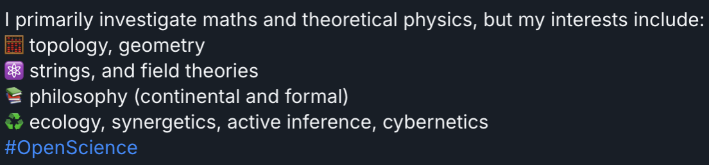

Where am I?
You may have wandered here in the dark after much stumbling. I don't know how you got here, but I am glad you can join me. My name is Ryan Jamie Buchanan and I love life. It is a magical thing, and this blog is dedicated to showcasing a little sliver of this beautiful world. Writing is my therapy, and if my words can be heard by even one other person, I consider that a net win. I like philosophy, classical music, emulation and retro games, God and spirituality, and mathematics.
Together we will explore the miracles of life, love, and wisdom from the comfort of our own screens, wherever we may be.
Disclaimer
This blog is a continuation of my old one. Oh, also this one.Research

I am very broad in my interpretation of "philosophy;" I also include many branches of psychology in this genre as well.About the Author
Born and raised in Cascadia - Olympia, Washington (October 18, 2000); Roseburg area (most of my life); when I'm not glued to a screen, I enjoy conversing with people, writing, playing the didgeridoo (badly), going for little walks, and playing with the family dogs.